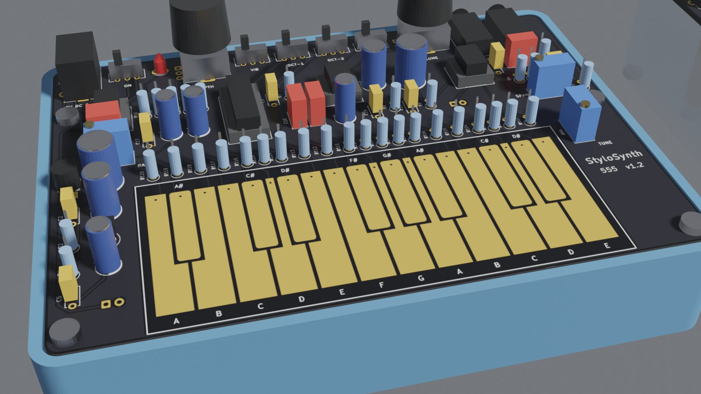
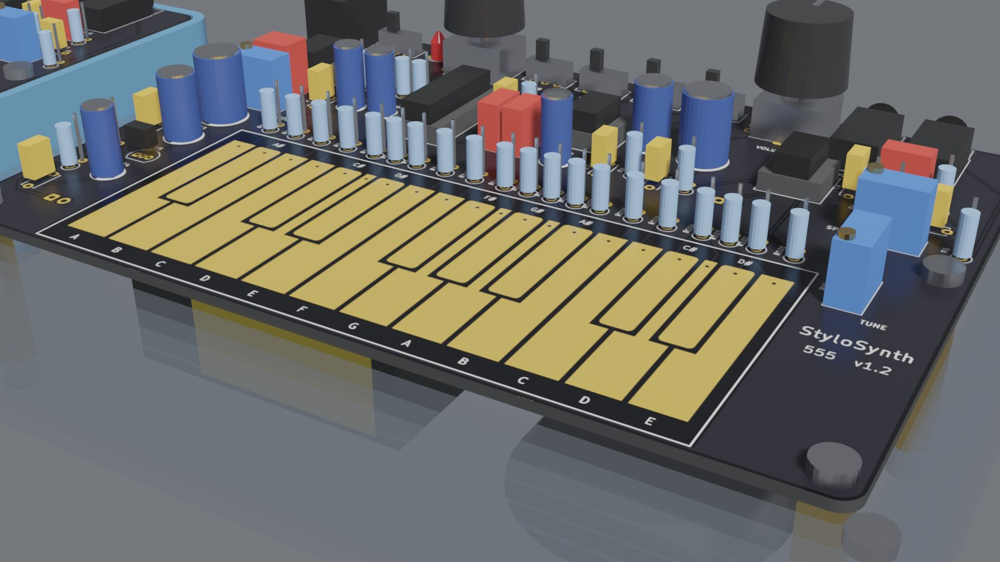
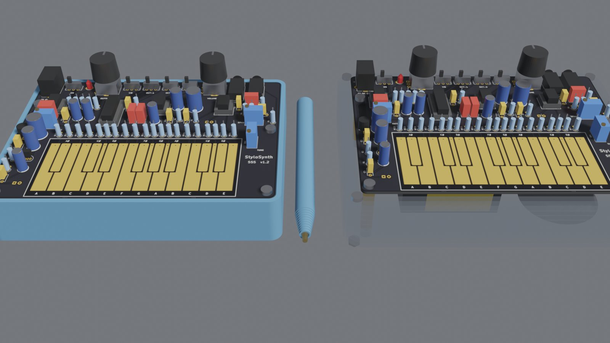
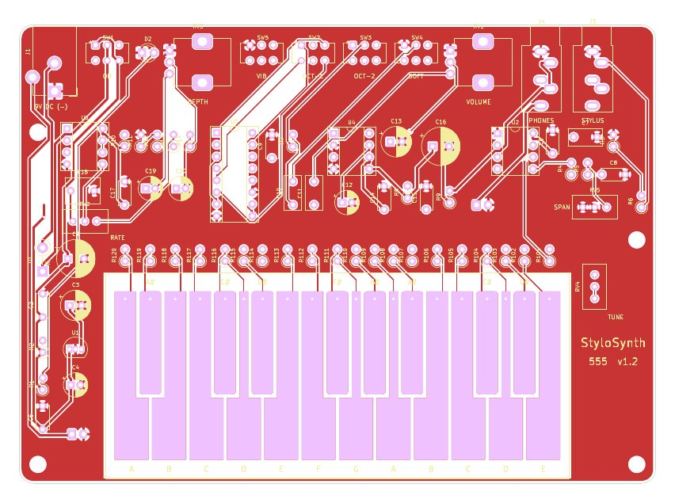
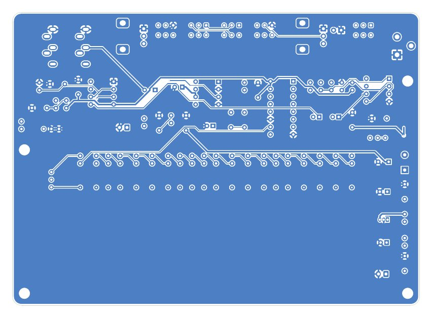
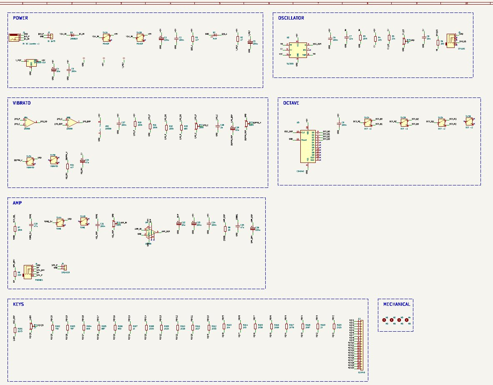

1967
The Stylophone
Brian Jarvis's pocket instrument for Dubreq: a metal stylus on printed-circuit keys, one buzzy oscillator and a vibrato switch. Cheap, odd and unforgettable. It made it onto David Bowie's “Space Oddity” in 1969.
Touch a brass stylus to twenty copper keys. A 555 timer sings, a binary counter keeps the octaves perfect, and an LM386 drives the speaker. The schematic, PCB, enclosure, simulations and this web app all come from one Python circuit description.
Brian Jarvis's pocket instrument for Dubreq: a metal stylus on printed-circuit keys, one buzzy oscillator and a vibrato switch. Cheap, odd and unforgettable. It made it onto David Bowie's “Space Oddity” in 1969.
Makers have rebuilt the Stylophone around the humble 555 timer ever since: a handful of resistors, a stylus and a speaker. Those DIY clones, and the problems their builders wrote up, are what inspired this project.
The idea taken further around a CMOS 555: a regulated oscillator rail, exact octaves from a binary counter, a proper power amp and two-trimmer calibration. Every artefact is generated by scripts and checked automatically before a board is ever ordered.






Status: v1.2 is fully verified in software (simulation, tolerance analysis, netlist, ERC, DRC, mechanical fit) but hasn't been built yet. Jack and switch pinouts, real-IC behaviour and footprint fit are still to be confirmed on a prototype.